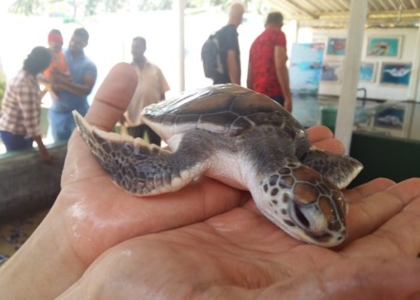
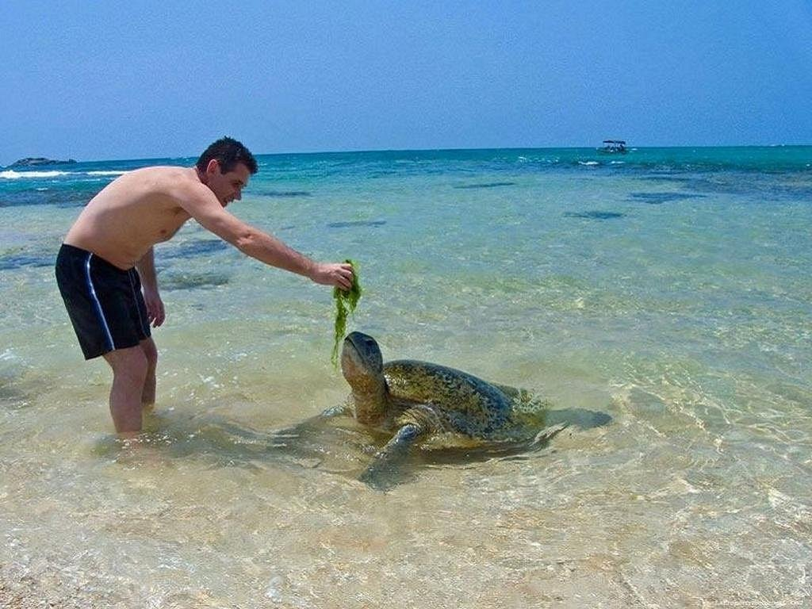
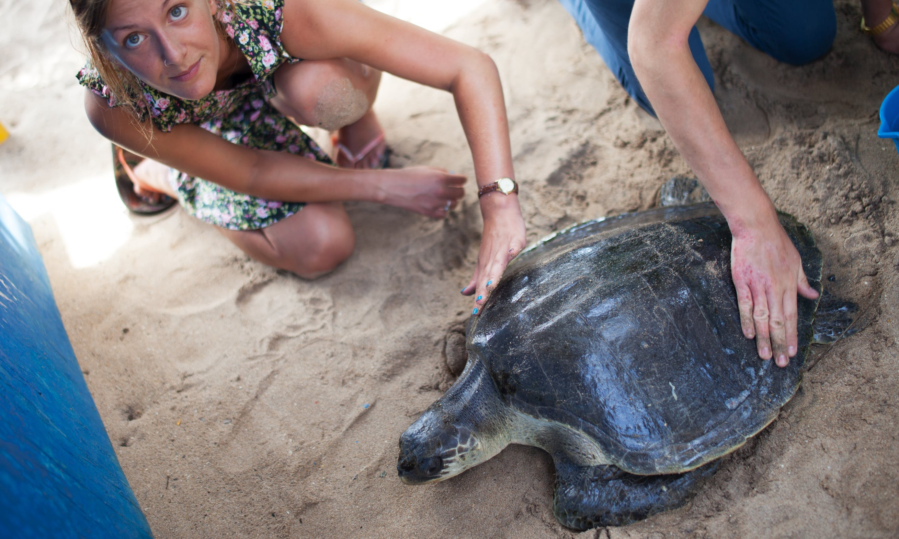
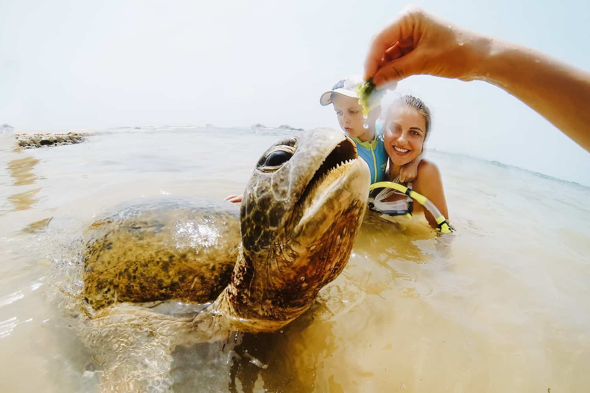

What we can do in Hikkaduwa turtle hatchery ?
- Take a guided tour of the hatchery facility to learn about the various species of sea turtles found in Sri Lanka, their life cycles, and the conservation efforts undertaken by the hatchery. The knowledgeable staff will provide you with valuable insights into turtle conservation and answer any questions you may have. 
- Turtle Feeding: Witness the feeding sessions at the hatchery and observe how the turtles are cared for. You may have the chance to feed the turtles yourself under the guidance of the staff, which can be an exciting and educational experience. 
- Turtle Release: One of the highlights of visiting the hatchery is the opportunity to participate in a turtle release program. Depending on the hatchery's schedule, you may be able to release baby turtles into the ocean. 
- Volunteer Opportunities: If you have more time to spare, you may have the option to volunteer at the hatchery. Volunteers can assist in various activities such as caring for the turtles, cleaning the tanks, monitoring nests, and educating visitors. Volunteering provides a hands-on experience and a chance to make a direct impact on turtle conservation. 
- Educational Programs: The hatchery conducts educational programs for visitors of all ages. These programs focus on raising awareness about sea turtle conservation, the threats they face, and the importance of preserving their habitats. You can engage in interactive sessions, presentations, and discussions to deepen your understanding of sea turtle conservation efforts.